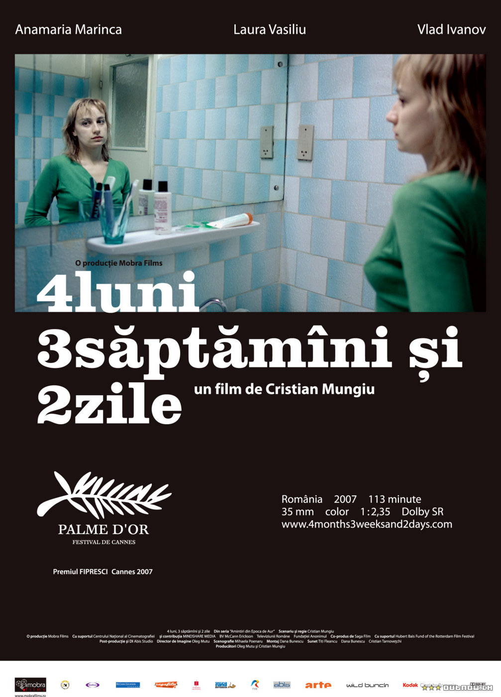

Rumen Yeni Dalgası
Rumen Yeni Dalgası akımının önemli yönetmenlerinden birkaçı;
- Cristian Mungiu ve filmi 4 luni, 3 saptamâni si 2 zile
 - Corneliu Porumboiu ve filmi Politist, adjectiv

- Cristi Puiu ve filmi Moartea domnului Lăzărescu